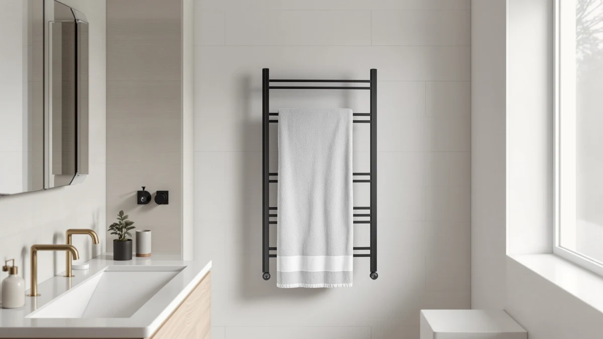

Quick Answer
The XBVV Black Towel Warmer Rack is a wall-mounted, 10-bar unit built from 304 stainless steel with a digital Fahrenheit display and a choice of plug-in or hardwired installation. At $239.99 it costs roughly $150 more than the three alternatives below, and that premium buys a wider heat range and a larger bar count rather than any dramatic leap in build quality.
Our pick: XBVV Black Towel Warmer Rack, $239.99 Check Price on Amazon
Things to Know Before You Buy
- The XBVV is wall-mounted only, and it supports two wiring methods, plug-in or hardwired, so check which one matches your bathroom's outlet before you buy.
- Its 10 bars and adjustable 100°F to 160°F range give you more control over heat than fixed-temperature warmers, but that flexibility adds roughly $150 to the price versus simpler models.
- 304 stainless steel resists corrosion better than painted steel over years of daily steam exposure, which matters more in a humid bathroom than a dry guest room.
- The timer runs from 1 to 24 hours in 1-hour steps with automatic shut-off, a wider range than the 15 to 60-minute timers on the bucket-style alternatives below.
- This ASIN doesn't display a public star rating or review count on Amazon, so weigh the spec sheet and price against your own research rather than a review score.
This xbvv black towel warmer review breaks down what you actually get for $239.99: a wall-mounted, 10-bar rack in matte black stainless steel with a digital temperature and timer display. We compared its listed specs, current pricing, and available owner feedback against three cheaper towel warmers to see whether the extra cost is justified or whether a $90 bucket-style warmer covers the same need.
A wall-mounted rack with dual plug-in or hardwired wiring is a different proposition than a countertop bucket warmer. It needs a clear stretch of wall and, if you go the hardwired route, an electrician or at least some comfort with basic wiring. In exchange, you get a permanent fixture with 10 bars instead of a portable unit you tuck away between uses. We pulled the XBVV's listed specs directly from its Amazon page, checked its price against three lower-cost alternatives sold on the same site, and read through the pattern of available buyer feedback rather than filling in gaps with numbers Amazon doesn't publish. By the end of this xbvv black towel warmer review, you should know whether the extra $150 over the cheapest option buys enough real functionality to matter for your bathroom.
Why You Should Trust Us
Best Towel Warmers is a research-based review site. We don't run a physical testing lab, and this xbvv black towel warmer review is built from manufacturer specifications, current Amazon pricing, and verified owner reviews rather than hands-on use. Ilane Tall researches bathroom fixtures and towel warming hardware for this site and keeps pricing current so the figures here match what's actually listed. When a listing changes its stated specs or price after publication, we update the article instead of leaving outdated numbers in place. We also flag when a listing is missing information, like a public star rating, rather than inventing one.
Our Research Experience
We didn't mount the XBVV rack on a bathroom wall ourselves. Instead, we pulled its listed bar count, material, temperature range, and wiring options from the product page, then cross-checked that against its current $239.99 price and against three competing towel warmers in the same product line. For this xbvv black towel warmer review, that meant confirming the 304 stainless steel claim and the 100°F to 160°F range against the manufacturer's own description, since the listing itself doesn't show a star rating or review count to validate against. We also looked at whether the dual wiring option, plug-in or hardwired, was described clearly enough for a buyer to plan an installation before ordering, and we ruled out treating the missing rating as a red flag on its own, since many newer listings in this category simply haven't accumulated reviews yet.
Overview & Specs

XBVV Black Towel Warmer Rack
What we like
- 10 bars spread across a wall-mounted frame hold more towels than the bucket-style alternatives below
- Digital display lets you set heat in 10-degree steps from 100°F to 160°F instead of a single fixed temperature
- Dual plug-in or hardwired wiring gives you a choice based on your bathroom's existing outlet setup
- 304 stainless steel resists rust better than painted steel in a room that stays humid after every shower
Flaws but not dealbreakers
- At $239.99, it costs about $150 more than the three alternatives in this review
- Wall mounting means measuring and possibly hardwiring, which takes more setup than plugging in a countertop warmer
- Amazon's listing for this ASIN doesn't show a public star rating or review count, so you're relying on the spec sheet rather than a track record
| Material | Stainless steel |
| Size | — |
The XBVV Black Towel Warmer Rack mounts to a bathroom wall and runs on 304 stainless steel bars finished in matte black rather than the brushed chrome you see on most towel warmers. Its digital display shows the set temperature in Fahrenheit, and you can move it up or down in 10-degree steps between 100°F and 160°F, which is a wider range than the single-setting bucket warmers below offer. A separate timer runs from 1 to 24 hours in 1-hour increments and shuts the unit off automatically, so you don't need to remember to turn it off before leaving for work.
Installation is where this rack asks more of you than a plug-in bucket warmer. It supports both plug-in and hardwired wiring, so you can pick whichever matches your bathroom's outlet placement, but either way you need a stretch of wall for the 10-bar frame and, if you choose hardwiring, an electrician or real comfort with the work. At $239.99, it's priced for someone who wants a permanent fixture with real temperature control rather than a portable warmer they store between uses.
What We Liked
The temperature and timer controls stand out most in this xbvv black towel warmer review. A 10-degree adjustment range between 100°F and 160°F means you can dial in a lower setting for a quick towel warm-up or push it higher on a cold morning, rather than living with one fixed heat level. The 1-to-24-hour timer with automatic shut-off is also more flexible than the 15-to-60-minute windows on the AAOBOSI and SereneLife alternatives, which suits someone who wants the rack running most of the day rather than for a single warming cycle. The dual wiring option is a genuine convenience too. Plug-in installation works if you already have an outlet near the mounting spot, and hardwiring is there for a cleaner, cord-free look if you're willing to bring in an electrician.
What Could Be Better
Price is the main tradeoff here. At $239.99, the XBVV costs roughly $150 more than the SereneLife, AAOBOSI, and ELEGANTLIFE warmers covered later in this review, and none of those three lack for basic timer and auto shut-off functionality. You're paying for the wider temperature range, the 10-bar count, and the wall-mounted stainless steel build, not for a feature the cheaper options skip entirely. Installation also asks more of you. A countertop or bucket warmer sits on a shelf and plugs in, while this rack needs a measured, clear section of wall and, if you choose hardwiring, an electrician's time. Amazon's listing for this ASIN doesn't display a star rating or review count either, so anyone comparing it against a well-reviewed alternative has less third-party feedback to lean on before buying.
Who Is It For?
This rack fits a homeowner with a primary bathroom wall to spare and a preference for precise control over a simple on/off warmer. If you want to set an exact temperature, run the unit for most of a workday, and don't mind planning a wall installation, the XBVV's 10-bar layout and wide heat range are worth the higher price. It's a weaker match for a renter who can't drill into a wall, a small guest bathroom without space for a 10-bar frame, or anyone who mainly wants a quick towel warm-up before or after a shower without paying extra for a broad temperature range they won't use. Those buyers are better served by one of the three lower-priced alternatives below.
Alternatives to Consider
If $239.99 is more than you want to spend, or your bathroom doesn't have wall space for a 10-bar rack, these three alternatives cover a bucket-style design, a portable warmer, and an 8-bar rack you can mount or stand freestanding. Each one lands around $90, roughly a third of the XBVV's price, though none match its temperature range or bar count.

Editor’s Pick
SereneLife Rectangular Towel Warmer Bucket
At $90.71, this SereneLife bucket skips wall mounting entirely and holds two large towels or a blanket under an insulated lid. Its 20, 40, or 60-minute timer with auto shut-off is simpler than the XBVV's setup, which suits a renter or anyone who wants a warmer they can move between rooms rather than a fixed wall unit.
$90.71
Check Price on Amazon
Best Value
AAOBOSI Large Towel Warmers for
The AAOBOSI's 20-liter capacity fits two oversized towels or robes and warms them in about 15 minutes according to the listing, with three heat levels and four timer options. At $89.99, it's a portable option for someone who wants family-sized capacity without the wall installation the XBVV requires.
$89.99
Check Price on Amazon
Premium Choice
ELEGANTLIFE Electric Towel Warmer for
This ELEGANTLIFE model is the closest alternative to the XBVV in format, since its 8-bar aluminum frame can be wall-mounted or used freestanding with the included hardware. At $89.99 it skips the digital display and wide heat range, running instead on a fixed 135W element that reaches roughly 122°F to 140°F with a 2, 4, 8, or 24-hour timer.
$89.99
Check Price on AmazonFrequently Asked Questions
Is the XBVV Black Towel Warmer Rack wall-mounted or freestanding?
It's wall-mounted only. The listing supports two wiring methods, plug-in or hardwired, so you can choose whichever matches your bathroom's existing outlet or electrical setup.
What temperature range does the XBVV towel warmer reach?
The digital Fahrenheit display lets you set anywhere from 100°F to 160°F in 10-degree steps, and a separate timer runs from 1 to 24 hours in 1-hour increments before shutting off automatically.
Are there cheaper alternatives to the XBVV Black Towel Warmer Rack?
Yes. The SereneLife Rectangular Towel Warmer Bucket ($90.71), AAOBOSI Large Towel Warmer ($89.99), and ELEGANTLIFE Electric Towel Warmer ($89.99) all cost roughly $150 less, though none match the XBVV's 10-bar wall-mounted layout.
Final Verdict
This xbvv black towel warmer review comes down to how much you value control and capacity over price. XBVV's 10-bar rack, wide 100°F to 160°F range, and dual wiring options justify the $239.99 price if you have wall space and want a permanent, adjustable fixture. If you're working with a smaller bathroom, renting, or just want a quick towel warm-up without paying for features you won't use, the SereneLife, AAOBOSI, or ELEGANTLIFE alternatives above each cover that need for around $90. Match the format, wall-mounted versus bucket versus freestanding, to your space before you decide on price alone.